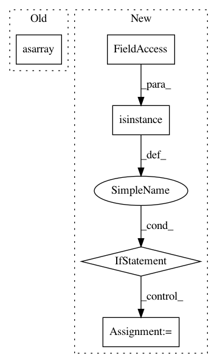

ebbc9fc0fc52a650ebd5bbbd954733bada35672e,niftynet/layer/histogram_normalisation.py,HistogramNormalisationLayer,layer_op,#HistogramNormalisationLayer#Any#Any#,58
Before Change
def layer_op(self, image_5d, mask=None):
assert image_5d.ndim == 5
image_5d = np.asarray(image_5d, dtype=float)
image_mask = None
if mask is not None:
image_mask = np.asarray(mask, dtype=np.bool)
After Change
image_5d = np.asarray(image, dtype=np.float32)
image_mask = None
if isinstance(mask, dict):
image_mask = mask.get(self.field, None)
elif mask is not None:
image_mask = mask
elif self.binary_masking_func is not None:
image_mask = self.binary_masking_func(image_5d)
else:
// no access to mask, default to all image
image_mask = np.ones_like(image_5d, dtype=np.bool)
normalised = self._normalise_5d(image_5d, image_mask)
if isinstance(image, dict):
image[self.field] = normalised
In pattern: SUPERPATTERN
Frequency: 3
Non-data size: 5
Instances
Project Name: NifTK/NiftyNet
Commit Name: ebbc9fc0fc52a650ebd5bbbd954733bada35672e
Time: 2017-08-08
Author: wenqi.li@ucl.ac.uk
File Name: niftynet/layer/histogram_normalisation.py
Class Name: HistogramNormalisationLayer
Method Name: layer_op
Project Name: keras-team/keras
Commit Name: 1dc67f374cde47a721e5fe5d9237bc2573bda2f0
Time: 2017-07-06
Author: souptc@gmail.com
File Name: keras/backend/cntk_backend.py
Class Name:
Method Name: in_test_phase
Project Name: ANSSI-FR/SecuML
Commit Name: 14b0d3efb14e998029aa3f2e633afda4b8436118
Time: 2019-05-03
Author: anael.beaugnon@ssi.gouv.fr
File Name: secuml/core/tools/plots/density.py
Class Name: Density
Method Name: _display_dataset